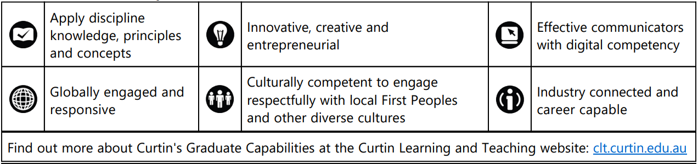
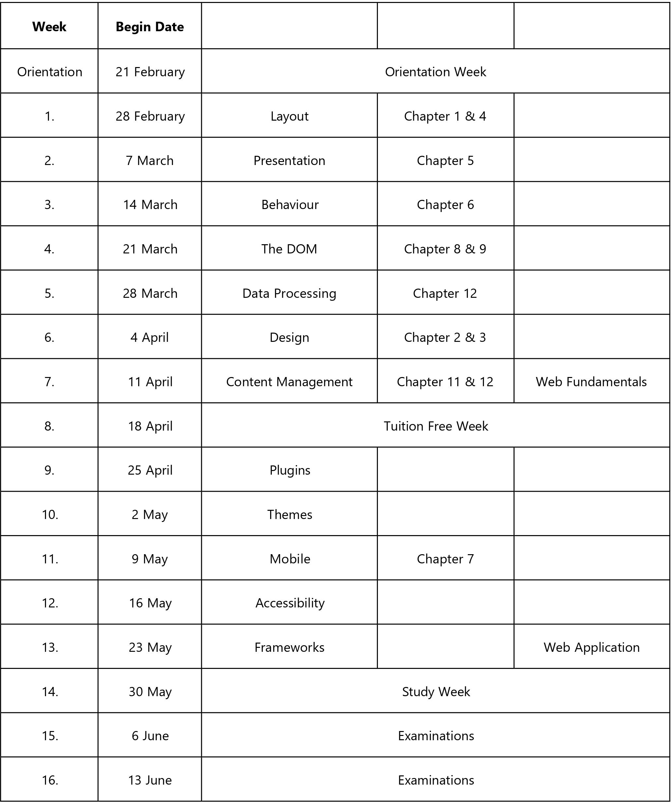

Faculty of Business and LawSchool of Management and Marketing
Unit Outline
ISYS3004 Business Web and Mobile TechnologiesSemester 1, 2022
|
Unit study package code:
|
ISYS3004
|
|
Mode of study:
|
Internal
|
|
Tuition pattern summary:
|
Note: For any specific variations to this tuition pattern and for precise information refer to the Learning Activities section.
Computer Laboratory: 1 x 3 Hours Weekly
This unit does not have a fieldwork component.
|
|
Credit Value:
|
25.0
|
|
Pre-requisite units:
|
ISYS2001 (v.0) Introduction to Business Programming or any previous version
AND
ISYS2007 (v.0) Database or any previous version
|
|
Co-requisite units:
|
Nil
|
|
Anti-requisite units:
|
Nil
|
|
Result type:
|
Grade/Mark
|
|
Approved incidental fees:
|
Information about approved incidental fees can be obtained from our website. Visit fees.curtin.edu.au/incidental_fees.cfm for details.
|
|
Unit coordinator:
|
Title:
Phone:
Email:
Location:
|
Dr Name: Michael Borck
+61 8 9266 3976 Michael.Borck@curtin.edu.au Building: 402 - Room: 720
|
|
Teaching Staff:
|
Name:
Phone:
Email:
Location:
|
Viraj Dawarka
4016511 Viraj.Dawarka@curtin.edu.au Building: CTI - Room: CTI
|
|
|
Name :
Phone:
Email:
Location:
|
Veerajay Gooljar
4016511 vgooljar@curtinmauritius.ac.mu Building: CTI - Room: CTI
|
|
Administrative contact:
|
Name:
Phone:
Email:
Location:
|
Jeannie Darmago
Please email
FLBTSUnitAdmin@curtin.edu.au Building: Please email - Room: Please email
|
Learning Management System: Blackboard (lms.curtin.edu.au)
Acknowledgement of Country
We respectfully acknowledge the Indigenous Elders, custodians, their descendants and kin of this land past and
present. The Centre for Aboriginal Studies aspires to contribute to positive social change for Indigenous
Australians through higher education and research.
Coronavirus (COVID-19) Update
Curtin University is committed to supporting all our students and staff whether they are on campus, working
remotely or overseas. Your health, safety and wellbeing are our priority and the continuing COVID-19 pandemic
may require changes to the unit schedule, learning activities, delivery modes and assessment to provide flexible
and safe options to our community. Curtin will endeavour to keep changes and disruptions to a minimum at all
times. For current advice and further information visit https://www.curtin.edu.au/novel-coronavirus/.
Syllabus
The study of Web application development; examine web technologies, alternative web development
methodologies and evaluate various code libraries and tools.
Introduction
Students will develop and apply the skills necessary to design and implement business websites using appropriate
technologies in this unit. This technology includes using HyperText Markup Language (HTML) to define the
structure, Cascading Style Sheets (CSS) to determine the look and feel, JavaScript to provide a website's
behaviour, and other supporting technologies and frameworks to provide for a rich user experience in a business
context. Students will develop and apply professional skills in a web development environment to identify
stakeholder requirements and select and implement appropriate technologies for responsive and accessible web-based applications.
Unit Learning Outcomes
All graduates of Curtin University achieve a set of six Graduate Capabilities during their course of study. These
inform an employer that, through your studies, you have acquired discipline knowledge and a range of other skills
and capabilities which employers would value in a professional setting. Each unit in your course addresses the
Graduate Capabilities through a clearly identified set of learning outcomes. They form a vital part in the process
referred to as assurance of learning. The learning outcomes notify you of what you are expected to know,
understand or be able to do in order to be successful in this unit. Each assessment for this unit is carefully
designed to test your knowledge of one or more of the unit learning outcomes. On successfully completing all of
the assessments you will have achieved all of these learning outcomes.
Your course has been designed so that on graduating you will have achieved all of Curtin's Graduate Capabilities
through the assurance of learning processes in each unit.
Curtin's Graduate Capabilities

Learning Activities
These learning activities in this unit include a mixture of reading, website study, watching videos, quizzes and other
online activities that enable students to self-test their understanding. Some activities will be story-lined; that is
must complete one activity before progressing. Students undertake other hands-on activities during weekly
workshops, interspersed with short lectures. Partial model solutions to some activities will be available on
Blackboard. Preparatory and workshop activities are on the Blackboard site.
Learning Resources
Essential texts
Lane, J., Barker, T., Lewis, J., Moscovitz, M. 2012. Foundation website creation with HTML5, CSS3, and
JavaScript. Friends of, an Apress company.
(ISBN/ISSN: 978-1-4302-3790-7)
Online resources
Lane, J., Barker, T., Lewis, J., Moscovitz, M. 2012. Foundation website creation with HTML5, CSS3, and
JavaScript. Friends of, an Apress company.
(https://link-springer-com.dbgw.lis.curtin.edu.au/book/10.1007%2F978-1- 4302-3790-7)
(ISBN/ISSN: 978-1-4302-3790-7)
Assessment
Assessment policy exemptions
- There are no exemptions to the assessment policy
Assessment schedule
|
|
Task
|
Value
%
|
Date Due
|
Unit Learning Outcome(s) Assessed
|
Late Assessments Accepted?*
|
Assessment
Extensions Considered?*
|
|
1
|
Web Fundamentals
|
20%
|
Week: Week 7
Day:
Friday 15 April, 2022
Time: 23:59
|
1,3,5
|
Yes
|
Yes
|
|
2
|
Web Applications
|
40%
|
Week:
Week 13 Day: Friday 27 May, 2022
Time: 23:59 |
2,4 |
Yes |
Yes |
|
3 |
Extended Learning Portfolio |
40% |
Week: Examination Periodp>
Day: TBA
Time: TBA |
3,4,5 |
Yes |
Yes
|
*Please refer to the Late Assessment and the Assessment Extension sections below for specific details and
conditions.
Detailed information on assessment tasks
Web Fundamentals: This is a take-home assessment. You will evaluate several websites or web
technologies. Your critique will be submitted as an HTML document incorporating CSS to provide styling.
Your submission will include an embedded image and link to each site critiqued. See the assignment
handout for more information.
Web Applications: This is a take-home assessment. You will implement a simple website using the web
technologies and design principles discussed throughout the semester. See the assignment handout for
more information.
- Extended Learning Portfolio: This assessment is a portfolio of your work during the semester plus an
additional task(s). You present a reflective, coherent account of the achievements and demonstrate an
understanding of the ULO evidenced by your work during the semester. You can improve on earlier work
and incorporate any feedback you have received during the semester before submitting the portfolio. The
portfolio is due during the examination period.
Pass requirements
To pass this unit, you must:
- Receive an overall grade of 5 or above (a mark 50% or greater of the overall marks possible); and
- Submit all assessments.
Assessment Moderation
Fair assessment through moderation
Moderation describes a quality assurance process to ensure that assessments are appropriate to the learning
outcomes, and that students work is evaluated consistently by assessors. Minimum standards for the moderation
of assessments are described in the Assessment and Student Progression Manual, available from
policies.curtin.edu.au/findapolicy/
Pre-marking moderation
A co-assessor is assigned to this unit to review all assessment tasks and marking criteria/rubrics and monitor and
confirm the integrity of results. Assessment tasks are provided to students before the assessment task, marking
criteria are provided to students, assessors are provided with marking guides/rubrics and sufficient information to
ensure fair and consistent evaluation of student work.
Intra-marking / Post-marking moderation
The following intra-marking / post-marking moderation practices are planned for use in this unit:
- Second marking of student work samples near grade boundaries
- Second marking of borderline student work; or a process of review and validation of decisions where
students have not met the pass requirements
- Analysis of the variances between markers and locations
- Second marking of a random sample to check for consistent application of marking criteria and standards
Where late assessment is NOT permitted for an assessment item or the entirety of the unit (refer to the
Assessment Schedule table in this Unit Outline) and the student does not have an approved assessment extension:
- All assessment items submitted after the due date/time will receive a mark of zero.
Assessment extension
Where an application for an assessment extension is permitted for an assessment item(s) within this unit (refer to
the Assessment Schedule table in this Unit Outline):
- A student who is unable to complete an assessment item by/on the due date/time as a result of exceptional
circumstances beyond the student’s control, may apply for an assessment extension on the Assessment
Extension Application Form as prescribed by the Academic Registrar. The form is available on the Forms
page at https://students.curtin.edu.au/essentials/forms-documents/forms/ and also within the student's
OASIS (My Studies tab – Quick Forms) account.
- The student will be expected to submit their application for an Assessment Extension with supporting
documentation via the online form.
- Timely submission of this information supports the assessment process. For applications that are declined,
delayed submission may have significant ramifications on the possible marks awarded.
- An application may be accepted up to five working days after the due date/time of the assessment item
where the student is able to provide a verifiable explanation as to why they were not able to submit the
application prior to the assessment due date/time
Where an application for an assessment extension is NOT permitted for an assessment item(s) within this unit
(refer to the Assessment Schedule table in this Unit Outline):
- All assessment items submitted after the due date/time will be subject to late penalties or receive a mark of
zero depending on the unit permitting late assessment submissions.
Deferred assessments
If your results show that you have been granted a deferred assessment you should immediately check OASIS for
details.
Further assessment
Further assessments, if granted by the Board of Examiners, will be held between 13/07/2022 and 22/07/2022 .
Notification to students will be made after the Board of Examiners meeting via the Official Communications
Channel in OASIS.
It is the responsibility of the student to be available to complete the requirements of a further assessment. If your
results show that you have been granted a further assessment you should immediately check OASIS for details.
Reasonable adjustments for students with disabilities/health circumstances likely to impact on
studies
A Curtin Access Plan (CAP) is a document that outlines the type and level of support required by a student with a
disability or health condition to have equitable access to their studies at Curtin. Carers for people with disability
may also be eligible for support. This support can include alternative exam or test arrangements, study materials
in accessible formats, access to Curtin's facilities and services or other support as discussed with an advisor from
AccessAbility Services.
Documentation is required from your treating Health Professional to confirm your health circumstances or carer
responsibilities.
If you think you may be eligible for a CAP, please contact AccessAbility Services. If you already have a CAP please
provide it to the Unit Coordinator in week 1 of each study period.
If your results show that you have been granted a deferred assessment you should immediately check OASIS for
details.
Referencing style
The referencing style for this unit is APA 7th Ed.
More information can be found on this style from the Library web site:
https://libguides.library.curtin.edu.au/uniskills/referencing/apa7.
Privacy
As part of a learning or assessment activity, or class participation, your image or voice may be recorded or
transmitted by equipment and systems operated by Curtin University. Transmission may be to other venues on
campus or to others both in Australia and overseas.
Your image or voice may also be recorded by students on personal equipment for individual or group study or
assessment purposes. Such recordings may not be reproduced or uploaded to a publicly accessible web
environment. If you wish to make such recordings for study purposes as a courtesy you should always seek the
permission of those who are impacted by the recording.
Recording of classes or course materials may not be exchanged or distributed for commercial purposes, for
compensation, or for any other purpose other than personal study for the enrolled students in the unit. Breach of
this may subject a student to disciplinary action under Statute No 10-Student Disciplinary Statute.
If you wish to discuss this please talk to your Unit Coordinator.
Copyright
The course material for this unit is provided to you for your own research and study only. It is subject to
copyright. It is a copyright infringement to make this material available on third party websites without the express
written consent of Curtin University
Academic Integrity (including plagiarism and cheating)Academic Integrity
Curtin's Student Charter, Academic Integrity Program (AIP), and core Values guide expectations regarding student
behaviour and responsibilities. Information on these topics can be found on the Academic Integrity Website.
Academic Integrity Warnings
may be issued to a New-to-Curtin student in limited circumstances and only where
misconduct is not involved.
Academic Misconduct
Staff members are required to report suspected misconduct. Academic Misconduct means conduct by a student
that is dishonest or unfair in connection with any academic work. This includes all types of plagiarism, cheating,
collusion, falsification or fabrication of content, and behaviours like falsifying medical certificates for extension.
Contract cheating, the use of file sharing, translation services/apps, paraphrasing tools (text-spinners) and
assignment help websites also may be considered academic misconduct. The longer term personal, social, and
financial consequences of misconduct can be severe, so please ask for help if you are unsure.
If your work is the subject of an inquiry, you will be given an opportunity to respond and appropriate support will
be provided. Academic work under inquiry will not be graded until the process has concluded. Penalties for
misconduct may include a warning, a reduced or nil grade, a requirement to repeat the assessment, an annulled
grade (ANN) or termination from the course. For more information refer to Statute No.10 Student Discipline and
Academic Misconduct Rules.
Information and Communications Technology (ICT) Expectations
Curtin students are expected to have reliable internet access in order to connect to OASIS email and learning
systems such as Blackboard and Library Services.
You may also require a computer or mobile device for preparing and submitting your work.
For general ICT assistance, in the first instance please contact OASIS Student Support:
oasisapps.curtin.edu.au/help/general/support.cfm
For specific assistance with any of the items listed below, please contact The Learning Centre:
life.curtin.edu.au/learning-support/learning_centre.htm
- Using Blackboard, the I Drive and Back-Up files
- Introduction to PowerPoint, Word and Excel
Additional information
Further Assessment Student Eligibility
The Board of Examiners grants further Assessments.
Accreditation Bodies
This unit develops topics from the Australian Computer Society (ACS) ICT Profession Body of Knowledge: Systems
Acquisition. You can find more information about these topics and the ICT Professional Body of Knowledge at:
https://www.acs.org.au/__data/assets/pdf_file/0007/7792/The-ICT-Profession-Body-of-Knowledge.pdf
This unit supports AACSB International, Assurance of Learning through course-embedded assessments. In
particular, it supports the broad course learning goals of discipline knowledge (dk), critical thinking (ct), written
communication (wc), oral communication (oc), and ethical reasoning (er). More information at:
http://www.aacsb.edu/accreditation/standards/2013-business/learning- and teaching/standard8.aspx
Enrolment
It is your responsibility to ensure that your enrolment is correct - you can check your enrolment through the
eStudent option on OASIS, where you can also print an Enrolment Advice.
Student Rights and Responsibilities
It is the responsibility of every student to be aware of all relevant legislation, policies and procedures relating to
their rights and responsibilities as a student. These include:
- the Student Charter
- Values and Signature Behaviours
- the University's policy and statements on plagiarism and academic integrity
- copyright principles and responsibilities
- the University's policies on appropriate use of software and computer facilities
Information on all of the above is available through the University's "Student Rights and Responsibilities" website
at: students.curtin.edu.au/rights.
Note: In Australia and other jurisdictions, students are required to complete a screening check prior to
undertaking any activities that include children (e.g. surveying children at a school as part of a project). If this
applies to you, start by contacting your unit coordinator for advice.
Student Equity
There are a number of factors that might disadvantage some students from participating in their studies or
assessments to the best of their ability, under standard conditions. These factors may include a disability or
medical condition (e.g. mental illness, chronic illness, physical or sensory disability, learning disability), significant
caring responsibilities, pregnancy, religious practices, living in a remote location,or another reason. If you believe
you may be unfairly disadvantaged on these or other grounds please contact the appropriate service below. It is
important to note that the staff of the University may not be able to meet your needs if they are not informed of
your individual circumstances, so please get in touch with the appropriate service if you require assistance.
To discuss your needs in relation to:
Recent unit changes
Students are encouraged to provide unit feedback through eVALUate, Curtin's online student feedback system.
For more information about eVALUate, please refer to evaluate.curtin.edu.au/info/.

Recent changes to this unit include:
- The assessments have been updated and streamlined to make them more manageable for students to
follow and keep up to date.
- Delivery of unit material and tuition pattern now includes online components.
Program calendar
Program Calendar-Semester 1 2022
